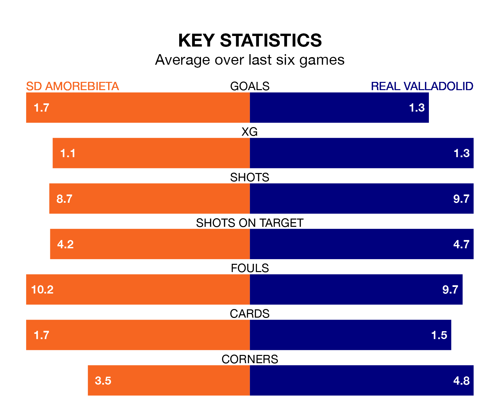

SD Amorebieta face Real Valladolid on Saturday seeking to protect their long unbeaten run in the Segunda División.
Amorebieta are unbeaten in five, with four wins and one draw, ahead of the 1pm kick-off.
They face a Valladolid team who have won three and drawn one over the same number of games.
Valladolid are fourth in the table after 35 games, of which they have won 17 and drawn seven, earning 58 points.
Amorebieta are 14 places behind the away side in 18th, with nine wins and 10 draws putting them on 37 points.
With 32 goals in 35 games so far this season, the hosts are scoring at below the league average rate with 0.9 goals per game. And they are conceding more than average, letting in 42 goals at a rate of 1.2 per game.
Valladolid, meanwhile, are above average scorers, with 1.2 goals per game, compared to a league average of 1.1. They have conceded 0.9 goals per game.
In the last three years, Amorebieta and Valladolid have played each other on three occasions. Amorebieta won one of them and Valladolid the other.
Their last meeting was on December 9, when Valladolid won 2-1 at home.
Amorebieta's last match was on Saturday, a 2-1 win against Levante UD, with Eneko Jauregi Escobar and Iker Unzueta Arregui getting the goals for Amorebieta.
Valladolid beat CD Eldense 1-0 last time out, also on Saturday, with Ramón Rodríguez Jiménez on the scoresheet.
Updated: 11:31 (UTC), 15/04/24